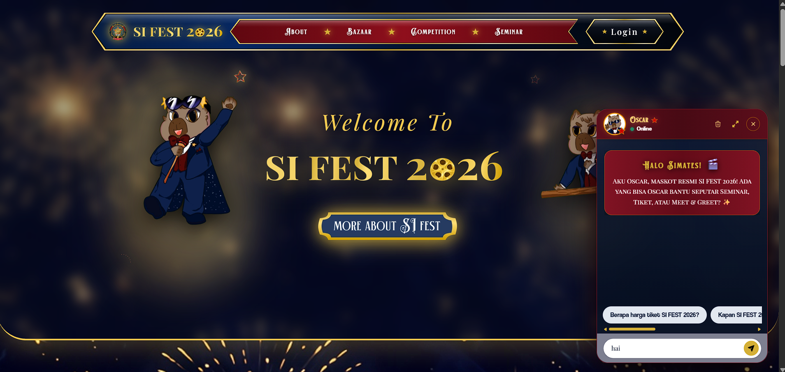
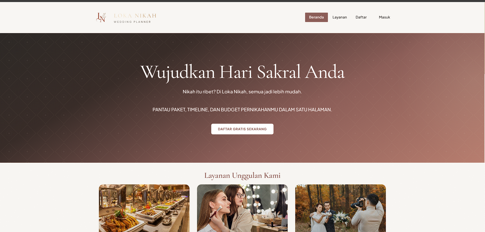
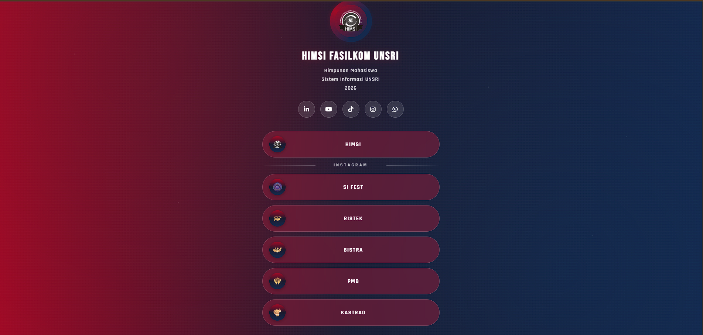
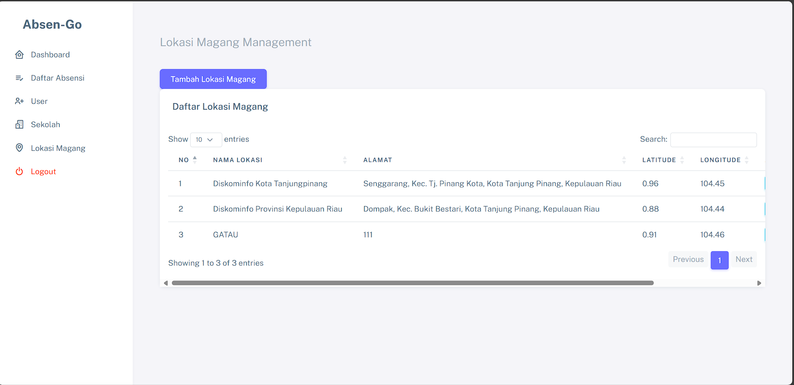
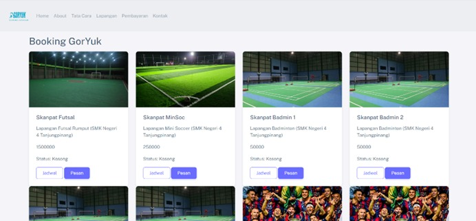

THE BUILDER
Frontend developer focused on building functional web applications with clean architecture and practical outcomes.
Philosophy & Professional Approach.
Frontend developer focused on building functional web applications with clean architecture and practical outcomes.
Information Systems student who approaches problems systematically — from requirements to deployed solution.
Active collaborator in student organizations and IT committees, connecting operational needs with reliable digital execution.
Mahasiswa Sistem Informasi Universitas Sriwijaya yang berfokus pada pengembangan web menggunakan framework Laravel. Memiliki pengalaman dalam membangun aplikasi manajemen internal serta aktif berkontribusi dalam kepanitiaan IT kampus. Berorientasi pada penerapan teknologi untuk efisiensi sistem dan penyelesaian masalah nyata di lingkungan profesional.
Technical Capability Matrix.
Selected Engineering Blueprints.
Sistem Informasi Festival 2026 Website

Website resmi kegiatan festival Sistem Informasi dengan integrasi Chatbot Oscar untuk layanan informasi interaktif.
sifestunsri.com ↗Platform Reservasi Wedding Organizer

Website wedding organizer yang menyediakan katalog layanan dan reservasi paket pernikahan secara online. Merupakan proyek kuliah (tugas kelompok) dengan kontribusi pada sisi frontend dan backend.
loka-nikah.vercel.app ↗Landing Page Kurasi Tautan Organisasi

Landing page kurasi tautan resmi untuk mempermudah navigasi informasi dan media komunikasi organisasi HIMSI.
Sistem Presensi Magang Instansi

Website presensi digital untuk pencatatan dan monitoring kehadiran pekerja magang di kantor pemerintah.
Sistem Pengarsipan Surat Kantor

Website internal untuk pengelolaan, pencatatan, dan pengarsipan surat dinas kantor secara digital.
Platform Reservasi Gelanggang Olahraga

Website lokal untuk pemesanan online gelanggang olahraga secara umum. Merupakan proyek sekolah yang dibangun menggunakan PHP Native.
Operational Log.
2026
SI FEST 2026
2026
SI FEST 2026
2026
UX Exhibition 2026
2025
PKKMB Departemen Sistem Informasi
2026
Inagurasi SI 2026
2025 – present
Universitas Sriwijaya
2022 – 2025
SMKN 4 Tanjungpinang
2019 – 2022
SMPN 6 Tanjungpinang
Network & Collaboration Channels.
Terbuka untuk kolaborasi rekayasa perangkat lunak, eksplorasi sistem informasi, dan peluang profesional.